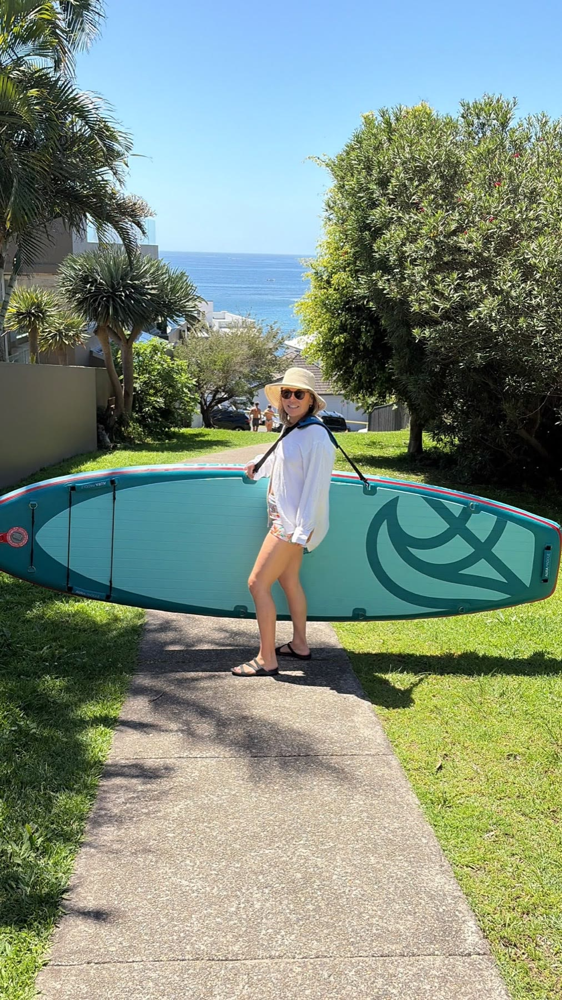
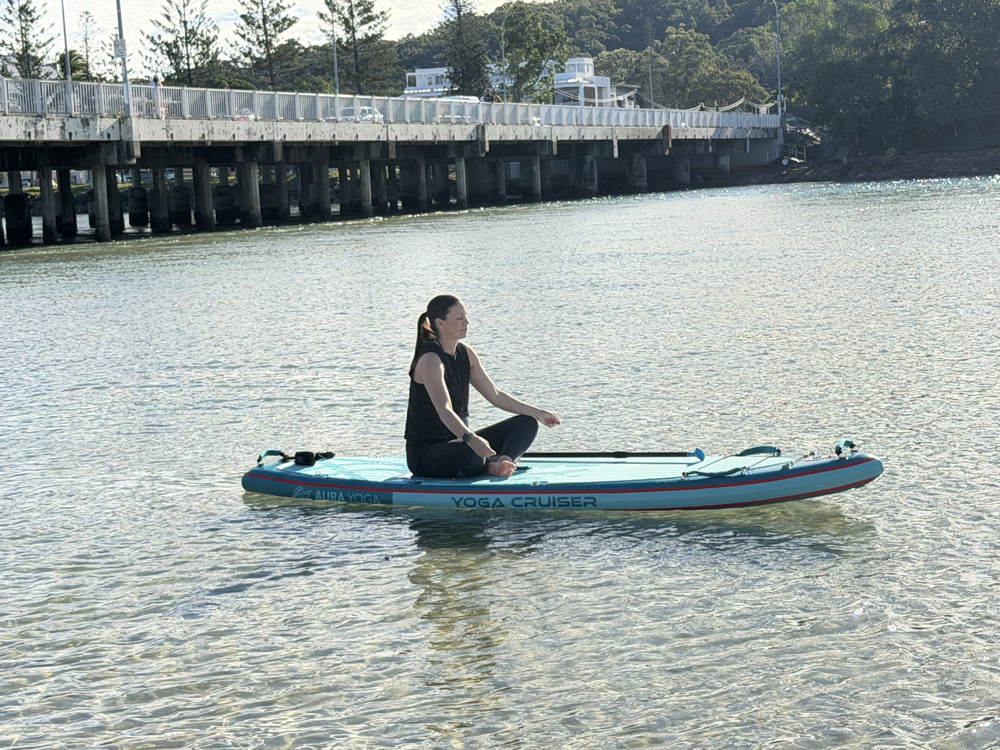

28-second overview
A short yoga SUP checklist
Video summary: Check usable deck space; read the Yoga Cruiser dimensions and UV-resistant material claim alongside the real layout; treat its published 180 kg capacity as a maximum rather than a recommended yoga rider weight; then check the kit, vehicle-powered pump, local safety guidance and qualified instruction.
01 · Space
1. Look at width and usable deck space together
Width is a useful starting point. A broader board can offer more room for your stance and hand placement, but the full outline matters too. Compare how much width continues through the middle, where you’ll actually move.
Check the length of the padded area rather than treating the whole board as a yoga mat. Can you place your hands, knees and feet comfortably without reaching onto unpadded sections? Product dimensions alone won’t answer that question; a clear overhead photo helps.
If your outings will include longer paddles as well as yoga, think about that balance. A wider platform may suit your practice, while a narrower board may make paddling more comfortable for some riders. Ask to try a comparable board through a lesson or demo if possible.

Real-world handling
Plan the carry before the launch

Think through the distance from the car, the surface underfoot and whether the route has steps, narrow gates or wind exposure. A wheeled bag helps before inflation; once inflated, board size and wind still matter.

02 · Layout
2. Check the deck pad, handles and fittings
Look for a textured deck pad across the area you expect to use. Consider both grip when wet and comfort under hands and knees. Grip doesn’t remove the possibility of slipping, and a product photo cannot tell you exactly how a pad will feel.
Inspect the carry handle, cargo bungees, D-rings and any raised fittings. Think about where your body will contact the deck. A centre handle can be convenient for carrying, but its position may affect your available movement space.
Keep bags and loose equipment away from your practice area, following the board’s instructions. Ask your instructor how to manage the paddle and any class positioning system. Avoid improvising tethers or anchoring arrangements.
03 · Load
3. Separate maximum capacity from rider suitability
Add together your weight and everything the board will carry. Then ask the manufacturer whether that load suits your intended activity.
A maximum capacity is an upper limit, not a promise that every rider below it will find the board comfortable for yoga. Board shape, construction, inflation pressure, load distribution and conditions all affect the experience. Don’t assume a fixed percentage of maximum capacity gives you a reliable recommended rider weight.
For yoga, assess the board for your own practice rather than assuming a passenger rating also means there is space for two people exercising. If the published information only gives maximum capacity, request rider-specific guidance before ordering.
04 · Setup
4. Think through transport and inflation
An inflatable SUP for yoga can pack away between outings, but check the whole journey: storage cupboard, car boot, car park and shoreline. Ask for the board’s weight, packed dimensions and total bag weight. Wheels help on suitable surfaces; you may still need to carry the bag over sand or steps.
Check the pump’s power source before choosing a launch spot. The current AURA electric pump requires car power; it is not cordless. Confirm that you can use it at your destination and follow the pump and vehicle instructions.
Inflate to the pressure specified for your board. Check the valve, fins and equipment before launching, and follow the manufacturer’s heat, storage and care guidance.
05 · Safety
5. Choose your first session as carefully as your board
Book a qualified SUP instructor, ideally with SUP-yoga teaching experience. Learn to paddle, turn, stop and get back onto the board before adding a practice. Choose sheltered, calm water with a suitable launch and an easy return; avoid offshore winds. Check the forecast, tides or currents, local restrictions and boat traffic. RNLI’s SUP safety guidance explains why conditions and preparation matter.
Wear an appropriately fitted lifejacket suitable for your activity and comply with local requirements. Paddle Australia’s safety guidance also recommends paddling within your limits, checking the weather and telling someone your plan.
A supplied leash isn’t suitable for every environment. Avoid weirs and moving-water hazards as a beginner.
Bring suitable clothing, sun protection, drinking water and a way to call for help carried on your person.
06 · AURA option
Where the AURA Yoga Cruiser fits
The AURA Yoga Cruiser measures 11 ft × 36 in × 6 in, with a listed volume of 285 litres and maximum capacity of 180 kg. It is an option to consider if deck space and relaxed paddling are priorities.
Its construction is listed as “All board materials are UV-resistant — designed for Australian conditions”. This does not mean the board can be left in prolonged sun or heat; follow the manufacturer’s inflation, heat, cleaning, drying and storage guidance.
Its listed package includes a wheeled carry bag, adjustable three-piece paddle, electric pump, 10 ft coiled leash, removable fins, waterproof phone pouch and repair kit. Check the current product page for inclusions and availability. Choose additional safety equipment for your location rather than assuming the package covers everything.
Compare the AURA inflatable SUP range with the outings you actually want to make.
07 · FAQ
Yoga SUP questions
Can I use an all-round SUP for yoga?
Possibly. Check its usable padded area, fittings and suitability for your load. A lesson on a hire board can help you understand what feels comfortable before choosing.
Is a wider yoga SUP always better?
No single width suits everyone. Consider your reach while paddling, body size, deck layout and intended outings alongside the width.
Does a 180 kg capacity mean a 180 kg yoga rider?
No. Maximum capacity does not establish a recommended yoga rider weight. Ask for guidance based on the rider, gear and intended use.
Paddle out. Find your way on the water.
Reference notes
Sources and media
Yoga Cruiser specifications were checked against its linked AURA product page on 13 October 2026. Safety guidance is linked in context above. The deck view and silent explainer use official AURA product photographs with educational text. They do not constitute a yoga performance test.